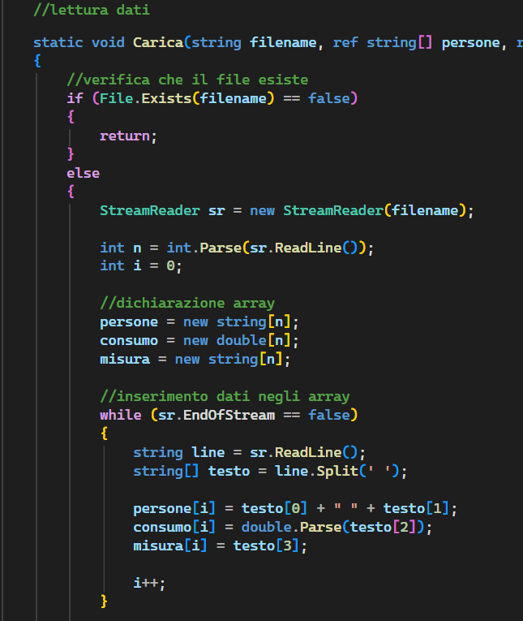
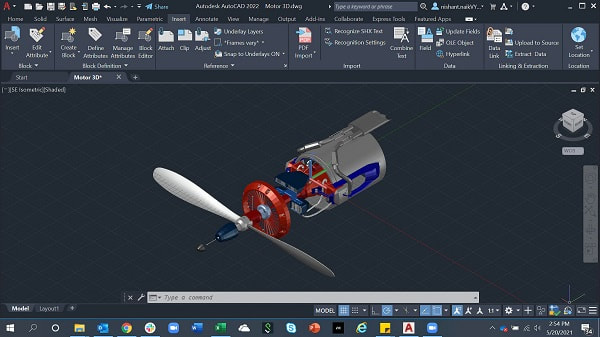

Linguaggio C# e html
Grazie al mio indirizzo scolastico sto sviluppando delle competenze con il linguaggio C#. Inoltre ho delle conoscenze basilari di html. (per esempio questo sito!)

Grazie al mio indirizzo scolastico sto sviluppando delle competenze con il linguaggio C#. Inoltre ho delle conoscenze basilari di html. (per esempio questo sito!)

Quest'anno abbiamo iniziato dei lavori su autoCAD e subito me ne sono innamorato. Non so usaro solamente autoCAD ma anche programmi come Inventor, Fusion e Maya.
Mi piace molto l'inglese e al momento ho un certificato B1 Cambridge e ho partecipato ad un corso di livello C1 in Inghilterra.